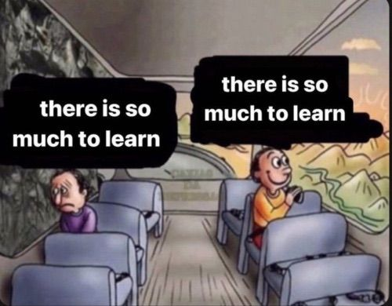
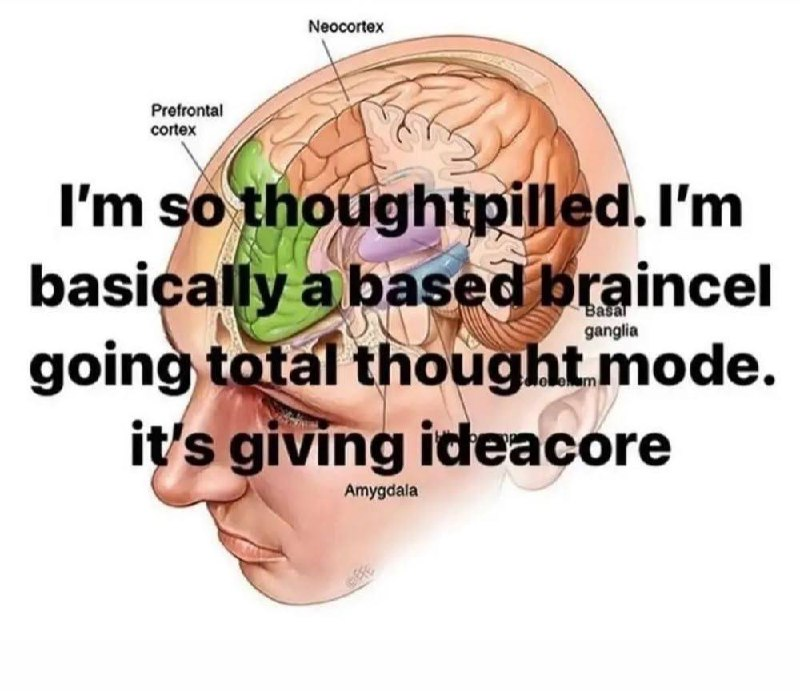
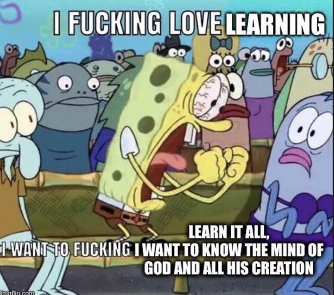

In december, i had an interesting conversation with my friends. Sat around a shitty table at a mall, during a short break from algebra, we started talking about the future. I'm not sure whether i asked them directly or if i got to it in passing, but i'm pretty sure i said something along the lines of: "So - at some point - do you want to stop studying?".
It's a question that i personally struggle to consider, but their answers weren't hesitant. "Yeah, sure", they said. They didn't want to stop learning, obviously - they told me that they wanted to keep finding new projects and to be well-informed on the technologies they would be working with, but they didn't really have a doubt about wanting to leave the academic world in order to do something practical.
It makes sense. Universities aren't really good at making you want to stay, with their unorganised hierarchies and general unawareness everyone seems to display. But i don't know. There's a part of me (a very prevalent part) that doesn't ever want to leave.
It's not just the fact that i'm enthralled by knowledge (though i am, in any form really - kowing things is one of my biggest desires). It's the fact that i've realised that i'm not sure who i really am if i'm not studying.
But though my self-worth has been tied to my academic results for longer than i can remember, i like to think of myself as more than a simple stockholm syndrome victim. I genuinely enjoy the act of studying. Even (especially?) abstract things.
I love how, from being completely lost, the mind adapts to new concepts. How it starts thinking by new rules and moving in new spaces. How it can go from reading something and thinking it might be written in martian, to understanding its every facet. And i never want to stop doing it!!
The reason algebra became my favourite subject this semester (besides the fact that i had actively decided it would) (self-gaslighting works wonders) is exactly that: it allowed me into a completely different universe with a different set of rules, and it told me to figure out its inner workings (even if the course obviously barely scratched the surface). I liked having to find the property that could help me in proving something. I loved seeing those abstract structures and knowing i had even a slight idea of what one could do with them. And i loved how it challenged me: how i had to really reason in order to fully understand things. How i had to know where i was standing, and the bounds within which i was working.
The thing i'm starting to realise, the more i study, is that, maybe, i might just want to be the crazy guy writing nonsense on a blackboard.
And that, more than that, i genuinely can't picture myself not studying. Sure, i'm probably influenced by the fact that i've been studying for my entire life and, sure, the fact that my mother is a professor doesn't help either. But i genuinely cannot see a life for myself without the act of studying in it.
Now, what that means for me, i still don't know. But i definitely know that, like a moth, i want to be as close to the sources of knowledge as possible. That i want to get a master's, and probably a PhD. And that, if i somehow end up having to study things for a living, i will probably be more than content.
hell yeah, learning memes


